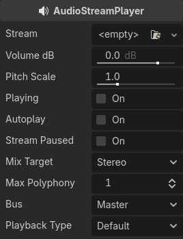
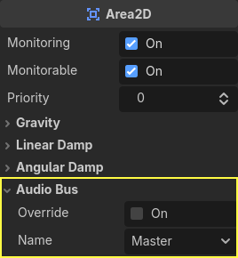
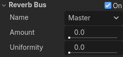
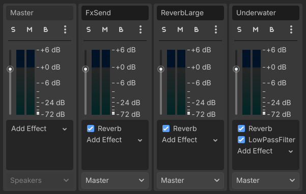
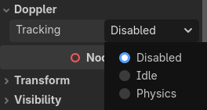

Work in progress
The content of this page was not yet updated for Godot
4.7
and may be outdated. If you know how to improve this page or you can confirm
that it's up to date, feel free to open a pull request.
Audio streams
Introduction
As you might have already read in Audio buses, sound is sent to each bus via an AudioStreamPlayer node. There are different kinds of AudioStreamPlayers. Each one loads an AudioStream and plays it back.
AudioStream
An audio stream is an abstract object that emits sound. The sound can come from many places, but is most commonly loaded from the filesystem. Audio files can be loaded as AudioStreams and placed inside an AudioStreamPlayer. You can find information on supported formats and differences in Importing audio samples.
There are other types of AudioStreams, such as AudioStreamRandomizer. This one picks a different audio stream from a list of streams each time it's played back, and applies random pitch and volume shifting. This can be helpful for adding variation to sounds that are played back often.
AudioStreamPlayer

This is the standard, non-positional stream player. It can play to any bus. In 5.1 sound setups, it can send audio to stereo mix or front speakers.
Playback Type is an experimental setting, and could change in future versions of Godot. It exists so Web exports use Web Audio-API based samples instead of streaming all sounds to the browser, unlike most platforms. This prevents the audio from being garbled in single-threaded Web exports. By default, only the Web platform will use samples. Changing this setting is not recommended, unless you have an explicit reason to. You can change the default playback type for the web and other platforms in the project settings under Audio > General (advanced settings must be turned on to see the setting).
AudioStreamPlayer2D

This is a variant of AudioStreamPlayer, but emits sound in a 2D positional environment. When close to the left of the screen, the panning will go left. When close to the right side, it will go right.
Note
Area2Ds can be used to divert sound from any AudioStreamPlayer2Ds they contain to specific buses. This makes it possible to create buses with different reverb or sound qualities to handle action happening in a particular parts of your game world.

AudioStreamPlayer3D

This is a variant of AudioStreamPlayer, but emits sound in a 3D positional environment. Depending on the location of the player relative to the screen, it can position sound in stereo, 5.1 or 7.1 depending on the chosen audio setup.
Similar to AudioStreamPlayer2D, an Area3D can divert the sound to an audio bus.

Unlike for 2D, the 3D version of AudioStreamPlayer has a few more advanced options:
Reverb buses
Warning
This feature is not supported on the web platform if the AudioStreamPlayer's playback mode is set to Sample, which is the default. It will only work if the playback mode is set to Stream, at the cost of increased latency if threads are not enabled.
See Audio playback in the Exporting for the Web documentation for details.
Godot allows for 3D audio streams that enter a specific Area3D node to send dry and wet audio to separate buses. This is useful when you have several reverb configurations for different types of rooms. This is done by enabling this type of reverb in the Reverb Bus section of the Area3D's properties:

At the same time, a special bus layout is created where each Area3D receives the reverb info from each Area3D. A Reverb effect needs to be created and configured in each reverb bus to complete the setup for the desired effect:

The Area3D's Reverb Bus section also has a parameter named Uniformity. Some types of rooms bounce sounds more than others (like a warehouse), so reverberation can be heard almost uniformly across the room even though the source may be far away. Playing around with this parameter can simulate that effect.
Doppler
Warning
This feature is not supported on the web platform if the AudioStreamPlayer's playback mode is set to Sample, which is the default. It will only work if the playback mode is set to Stream, at the cost of increased latency if threads are not enabled.
See Audio playback in the Exporting for the Web documentation for details.
When the relative velocity between an emitter and listener changes, this is perceived as an increase or decrease in the pitch of the emitted sound. Godot can track velocity changes in the AudioStreamPlayer3D and Camera nodes. Both nodes have this property, which must be enabled manually:

Enable it by setting it depending on how objects will be moved:
use Idle for objects moved using _process, or Physics
for objects moved using _physics_process. The tracking will
happen automatically.